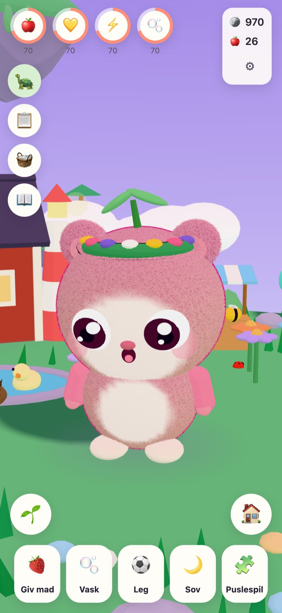
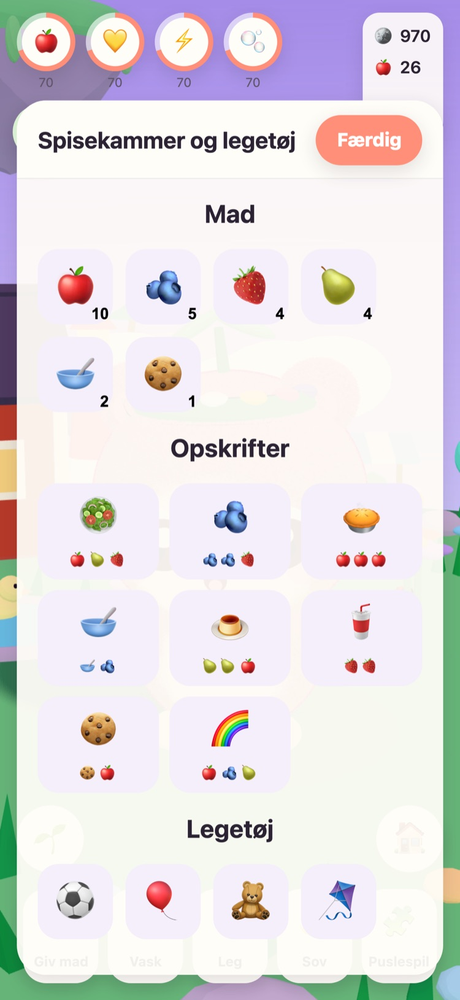
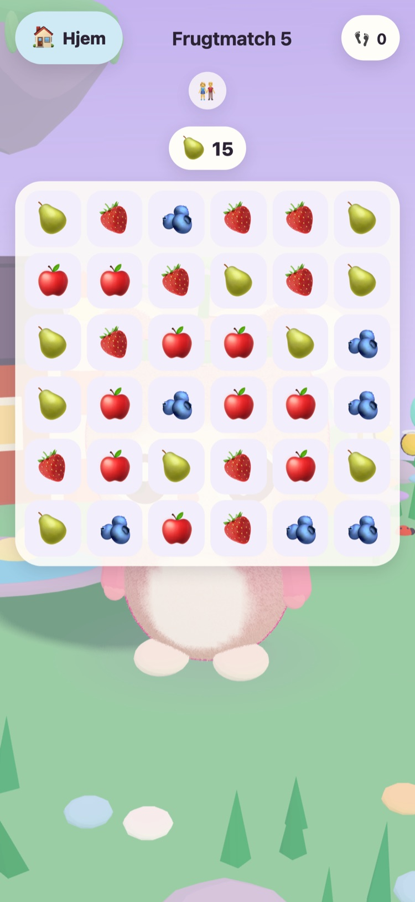
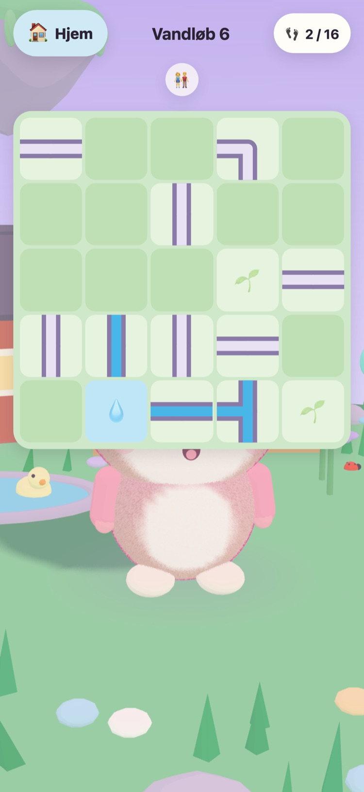
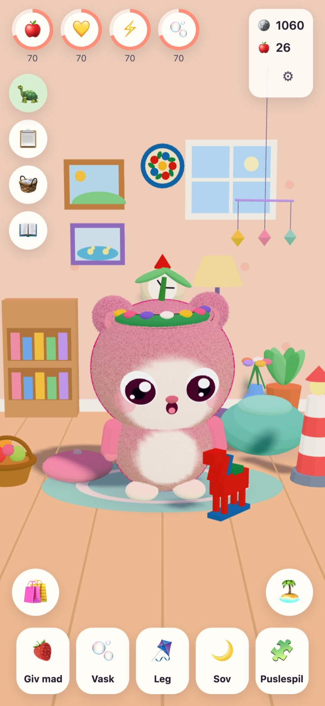
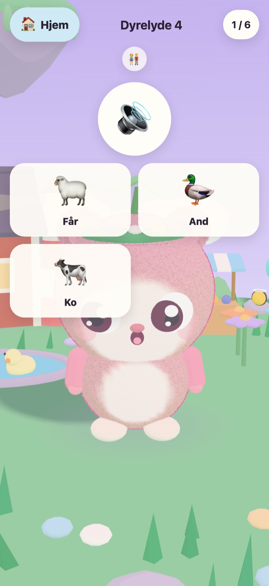

JUNOLittle Worlds
Klæk en Juno, pas på den, og løs blide puslespil, der vækker en svævende ø. Et roligt spil for børn på 6 til 10 år, på iPhone og iPad.
Hej! Jeg har fundet tre varme æg. Hvilket er dit?
- Ingen reklamer
- Ingen sporing
- Ingen konto
- Ingen timere eller pres






En helt egen lille ven
Morfar Tintin, den gamle skildpadde, der passer på Engøen, har fundet tre varme æg. Dit barn vælger et og giver det, der klækkes, et navn. Fra da af er Junoen barnets egen at give mad, vaske, lege med og lægge til at sove en lur.
-
Vælg et æg
Tre varme æg i tre farver. Dit barn vælger et og ser det klækkes.
-
Giv den et navn, og hold af den
Mad, vask, leg og lur. Junoen viser, hvordan den har det, og vokser i takt med jeres venskab.
-
Væk øen
Hver stjerne fra et puslespil bringer lyset tilbage til Engøen, indtil blomster, bier og ænder er hjemme igen.
Mad, vask, leg, lur
Forskellig mad og legetøj, bobler i badet og en Juno, der viser, hvordan den har det. Behovene falder langsomt og aldrig til nul, så en Juno går aldrig tabt.
57 blide puslespil
Frugtmatch, Huskehaven samt Dyrelyde og Køretøjslyde med rigtige optagelser. Stjerner får man for træk, aldrig for tid, og det er altid gratis at prøve igen.
En ø, der vågner
Blomsterhaven åbner med bier, Andedammen fyldes med vand og ænder, og frø vokser til æbler og jordbær i havebedene.
Et værelse at gøre hyggeligt
Mønter fra puslespil og dagens opgaver køber pynt til Junoens værelse og tøj at have på. Intet i møntbutikken koster rigtige penge.
Læst højt
Morfar Tintin læser hver eneste linje højt med sin egen varme stemme for børn, der ikke kan læse endnu. Tryk på ham for at høre det igen.
Et sted for forældre
Bag en forældrespærre: sprog, oplæsning, lyde, sengetid og en blid påmindelse om pause. Ved sengetid sover Junoen, og puslespillene venter til morgenen.
Taler 21 sprog
Morfar Tintin taler med dit barn på barnets eget sprog. Vælg et under Forældre, eller lad spillet følge enheden.
English Svenska Dansk Norsk Suomi Deutsch Nederlands Français Español Italiano Português (Brasil) Polski Русский Ελληνικά Türkçe Bahasa Melayu Kiswahili हिन्दी 日本語 한국어 简体中文
Lavet af en morfar
JUNO er lavet i Sverige af en morfar til hans barnebarn: et spil, han gerne ser hende spille. Morfar Tintin, skildpadden i spillet, er ham selv.
Derfor er reglerne enkle. Intet, der presser, intet, der snyder, og intet, der indsamler noget om dit barn.
Gratis og uden reklamer
JUNO er gratis at downloade og har ingen reklamer, ingen sporing og ingen konto. Alt, hvad dit barn laver, bliver på din enhed. Se siden om privatliv.
En voksen kan købe JUNO Plus eller Vinterpakken under Forældre, bag forældrespærren. Begge er engangskøb, som du kan gendanne og dele med din familie.